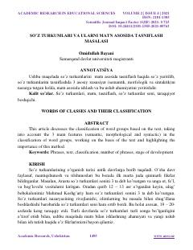

STSo'z turkumlarini matn asosida tasniflashning nazariy va amaliy masalalari haqida ilmiy maqola.
Ushbu ilmiy maqolada so'z turkumlarini matn asosida tasniflashning semantik, morfologik va sintaktik xususiyatlari tahlil qilinadi. Muallif M.N. Peterson va boshqa tilshunoslarning qarashlariga tayanib, so'z turkumlarini aniqlashda matn bilan ishlashning ahamiyatini yoritib beradi.